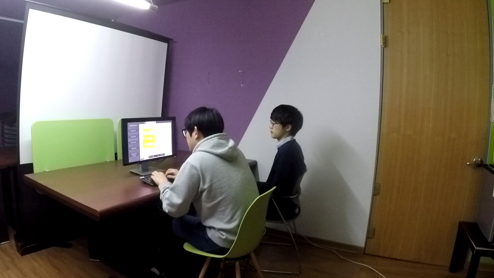

Milestone 4: Low-Fi Prototype
- 20164320 Junsoo Park
- 20164350 Youngbo Shim
- 20164352 Sang-Gyun An
Problem Statement
Researchers face difficulties in reading scientific papers of unfamiliar fields with a good level of understanding. Researchers feel hard to thoroughly read a scientific paper, especially papers of unfamiliar fields
Tasks
- Highlight important bits of text with different colors while reading a paper.
- Formulate one-sentence summary for each paragraph
- Formulate a list of pros and cons at the end of the paper
Prototype
Proto.io provides quick and flexible interaction, with many usable templates and button interfaces.
Design choices
Highlighting interaction simulated with Adobe Reader
Implementation of highlighting interaction is time-costly, so the prototype uses Adobe Reader’s highlighting tool that gives a similar experience. ###### Wizard of Oz prototyping Because it is difficult to equip Adobe Reader with a programmable interaction, Wizard of Oz prototyping is used. A Wizard has shared screen and input with the tester’s computer, and when the tester is done with the highlighting, the wizard switches the Adobe Reader’s tab to show the “other user highlights” page.

 ###### Group related interface not implemented. The group related interface is not part of the main interaction, so it is excluded in the prototype. ###### Fake data Data is faked because we don’t have any accumulated data. Previous user comments are created manually. ###### No aggregation mechanism No mechanisms for aggregating user input is present since this is for test purpose, and the users won’t see their work after the test.
###### Group related interface not implemented. The group related interface is not part of the main interaction, so it is excluded in the prototype. ###### Fake data Data is faked because we don’t have any accumulated data. Previous user comments are created manually. ###### No aggregation mechanism No mechanisms for aggregating user input is present since this is for test purpose, and the users won’t see their work after the test.
Representative Screenshots
The screenshots are taken with oCam Video and pictures of testing are taken with GoPro.
Instructions
###### Before test - Brief explanation of service concept - Explain the concept of ‘think aloud’ and start
###### Group selection view - Explain this is a view to select target lab group or study group
###### Paper selection view - Explain this is a view for group-interested paper list
 ###### Paper reading view - Give a instructions of paragraph task. Which is, 3 colored highlighting and paragraph summary
###### Paper reading view - Give a instructions of paragraph task. Which is, 3 colored highlighting and paragraph summary
###### Group result view - Tell this displays group’s highlight and summary results. Guide user to vote on best summary sentence.
###### After all paragraph tasks done - Explain the role of pros and cons view. Instruct user to see it.
User Feedback
Survey results
- Did service worked natural to support paper reading behavior? Yes (3 out of 3)
- Score how each functions helped you to read the paper (5 point maximum) (5 point scale : 1 - not helpful at all; 2 - not helpful; 3 - meh; 4 - somewhat helpful; 5 - very helpful)
- 3 colored-highlighting: 3.3
- Paragraph summary: 4.0
- Other users’ highlights: 3.7
- Other users’ summary: 4.3
- Pros/Cons: 3.3
- Do you think people might really use this service? Yes (3 out of 3) ###### 3 colored-highlighting
- “I used 3 colors because I was instructed to, but I only use one color normally. I could use more of the pros and cons color if I read the entire paper.”
- “I want to mark the keywords that I want to revisit, or things that need visiting the reference.”
- “vocabs could have explanations/annotations attached” ###### Paragraph Summarizing
- “Conducting the summarizing task made me concentrate and read thoroughly.”
- “Summarizing every paragraph is burdensome to the readers, especially for longer papers. How about selectively choosing to summarize some paragraphs?” ###### Other user’s highlight
- “I felt it was unnecessary, because what they marked as important was not readily acceptable for me. I would like to see why they made such highlights.”
- ”I felt others’ focus were different from me, and it was good to see how they could point out things that I have missed.” ###### Sentence Voting system
- ”Seeing others’ versions of the summary and voting among 3 of them was good. There was usually an acceptable version among the three.” ###### Pros/Cons display
- ”It would be better to display or jump to the exact part which is mentioned rather than just showing the sentences. It is hard to know contexts.”
- ”It may be better to incorporate these info in the main text rather than showing in a separate view.” ###### Other comments and suggestions
- ”How about anchoring the annotation with the diagram?”
- ”I prefer to read printouts to E-books due to concentration, but I think I could read from the screen with this system.”
- ”Usually people do not tend to read scientific papers in group. People only share the main ideas and the flow, but hardly share thoughts on the details. If this service facilitates the discussions on the details, we can be encouraged to do so.”
- ”It would be good to see other readers’ note or explanation.” #### Observation
- Although the instruction required the user to summarize after reading each paragraph, one user attempted to read continuously without summarizing.
- Users had extremely varying reading pattern and highlighting habits. One user was a thorough one-time reader, while another was a brief, multiple-times reader.
- It took long time to read passages, about 20 minutes to read a 2/3 of page of introduction section.